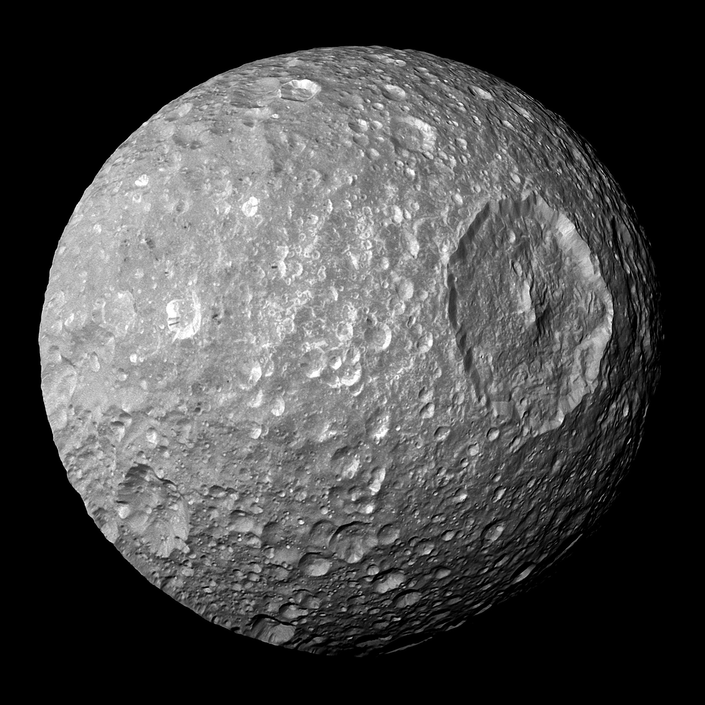

Moons

Mimas Cassini
Mimas with its large crater Herschel. Prominent bright-walled craters in this view include Ban just left of center near top, and Percivale (with several dark streaks) two thirds of the way left of Herschel.
- Diameter (km)
- 396 km
- Mass (kg)
- 0.4×1020 kg
- Orbital period (days)
- 0.9

Titan
Titan in natural color. The thick atmosphere is orange due to a dense organonitrogen haze.
- Diameter (km)
- 5,150 km
- Mass (kg)
- 1,350×1020 kg
- Orbital period (days)
- 16